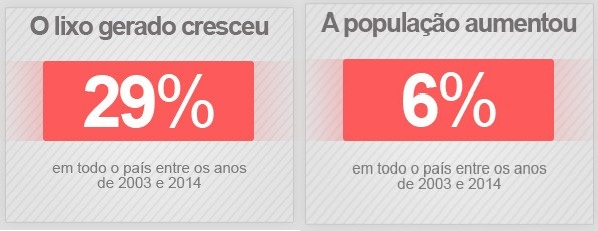

Mesmo com o fim do prazo para a aplicação da Política Nacional de Resíduos Sólidos (PNRS) em 2014, a situação do destino do lixo no Brasil pouco mudou. Se, em 2013, 41,7% do lixo era depositado em locais considerados inadequados (lixões e aterros controlados), em 2014, essa parcela foi de 41,6% – redução de apenas 0,1 ponto percentual.
Nos últimos 11 anos, o aumento da geração de lixo no país foi muito maior do que o crescimento populacional. De 2003 a 2014, a geração de lixo cresceu 29%, enquanto a taxa de crescimento populacional foi de 6%.
Mesmo com a retração econômica, o ano de 2014 registrou um aumento da produção de lixo por pessoa em comparação ao ano anterior.
Cada brasileiro produziu em média 1,062 kg de resíduos sólidos por dia. Ao longo do ano, foram 387,63 kg de lixo per capita, aumento de 2% em relação a 2013.
Continue lendo
